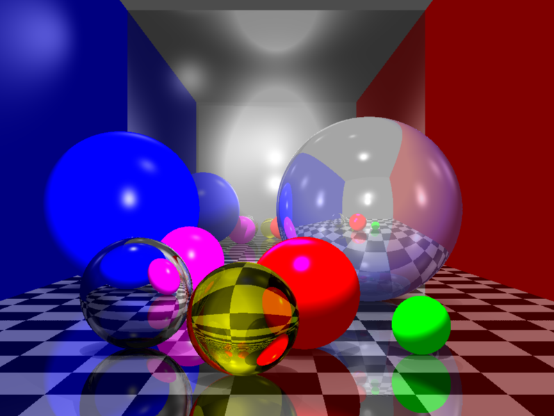

Wallas H. S. Santos
Ray Tracing
A implementação do Ray Tracing deste trabalho tem como objetivo ser o mais o mais simples possível. Porém ainda assim com as principais features da técnica.
Introdução
O Ray Tracing é uma técnica de renderização com o objetivo de simular o trajeto da luz na iluminação de objetos, de um cena. Na natureza, a luz emitida de uma fonte é refletida, absorvida por todos os objetos de um ambiente. A imagem que se forma na visão humana depende de como os materiais dos objetos se comportam ao receber fótons podendo absorver toda a luz (corpos negro), refletir (espelho), refratar (objetos transparentes) ou refletir determinadas frequências que formam as cores visíveis para o olho humano. Uma abordagem direta para produzir um ray tracing é através da simulação de disparos de raios de uma fonte de luz por toda a cena e capturar os raios refletidos.
Ray Casting
O primeiro passo da técnica é detectar os objetos a serem renderizados na cena. Para isso deve ser definido um frustum de visualização do observador que um volume que define o limite da visão. Esse frustum també é importante para definir o plano de projeção onde serão projetados os objetos da cena. O plano de projeção irá definir a imagem 2D da cena a ser renderizado que depois deve ser transformada em uma imagem de um monitor onde será exibido chamado viewport.
O plano de projeção deve ser dividido em um espécie de grade, onde cada célula dessa grade é um ponto que conterá uma cor da imagem da cena. Para definir da cor desta célula é necessário descobrir que ponto do objeto está sendo projetado. O ray casting é a técnica utilizada para descobrir este ponto. O procedimento consiste em "disparar" um raio da origem do observador passando pelo centro de uma célula do plano de projeção até um certo limite (o limite do frustum por exemplo). Para cada raio, itera-se por todos os objetos até que encontre um objeto ou nada, e em seguida guarda-se este ponto para as próximas etapas. Em caso de mais de um objeto toma-se em conta o mais próximo. Objetos transparentes ou reflexivo serão descritos mais adiante.

Modelo de Phong


Sombra


Anti Aliasing
Um efeito comum em uma renderização é presença de aliasing, ou também chamado de cerrilhado. O aliasing é resultado de um mudança de frequência abrupta, que é mais presente em cenas artificiais. Em imagens mais naturais (fotografia) essa transição é geralmente mais suave. A técnica mais comum de anti-aliasing é o multisample, que consiste em gerar uma amostra maior resolução do plano de projeção que a resolução final da imagem resultante. A forma mais comum é gerar 4 pontos adicionais para uma célula além do ponto central e então calcular a média do valor da cor deste 5 pontos e atribuir ao ponto central.

Reflexão e Refração


